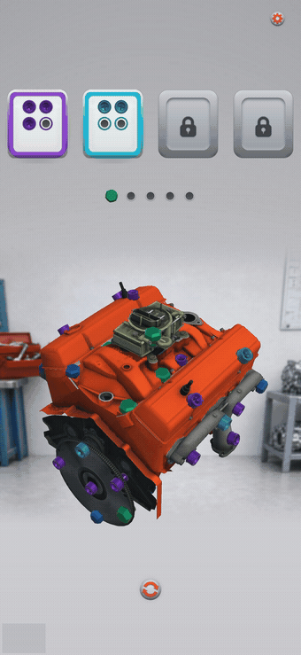
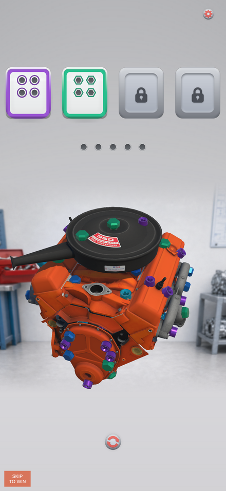
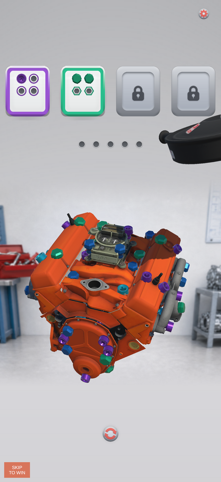
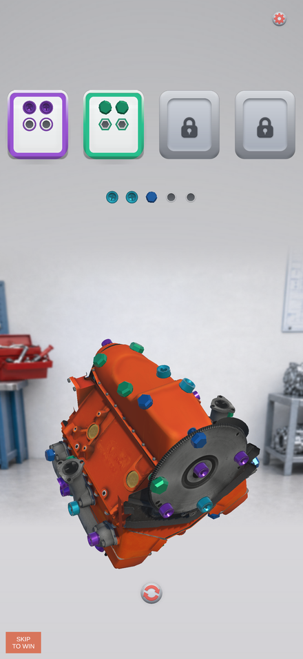

Bolt Sense — Project
A 3D bolt-and-tray puzzle game for iPhone, built solo from scratch.




Why this exists
I got tired of playing mobile puzzle games built to squeeze money out of players — stages that quietly become unwinnable unless you pay your way past them. Instead of just being annoyed by it, I decided to build the alternative myself.
I had no Unity background and no App Store experience when I started. I taught myself as I went — how to work inside Unity, how to work with AI tools without losing track of my own project, how to comment my own code well enough that I could still follow it months later coming back to it. The bigger realization came later: this was a much bigger undertaking than it looked like from the outside. It's easy to think a tool makes "build a full mobile game" sound like a small task. It doesn't. The real scope of it showed up as I went, and most of what went into this — the design rules, the winnability guarantees, the testing — exists because I kept running into that scope the hard way and had to build real systems for it, not shortcuts.
My daughter and my wife have both been part of this from early on, and that stays on this page whether anyone reads it or not. My daughter and I iterated the app icon together in Stable Diffusion — fifteen to twenty versions — until we had one we both liked, and it's the actual icon on the phone today. My wife was the first person other than me to ever play a build, and gave the game its first real, honest feedback. Months after my daughter had last seen the game, with no reminder from me, I showed her the current build again — she remembered how to play, remembered how to fail on purpose, and specifically remembered the explosion that happens when you fail. That's not a metric. It's a real part of why I keep going.
Where it's at
Solo project, self-taught, built around whatever time I actually have. One puzzle exists right now — a real V8 small block engine, a licensed third-party model, torn down to completion, winnable by design rather than by luck. Everything up to this point has been played by me, my wife, and my daughter. As of this build, my digital artist is the first person outside my family getting access, through TestFlight, to actually play it.
This is the first app, not the only one. What I've learned building it — the tooling, how I work with AI to keep a solo project organized, what actually works for a one-person team with close to zero budget — is meant to carry into whatever comes after it.
Built with
- Engine: Unity 2022.3.62f3
- Platform: iOS (iPhone, portrait)
If you are testing a build and see a "Skip to Win" button in the corner — that is a development tool, not a player-facing feature. It will be removed or gated before public launch.
Notes
- Bolt Sense is a working title.
- The engine model is a licensed third-party asset — a generic V8 small block, deliberately not tied to any manufacturer.